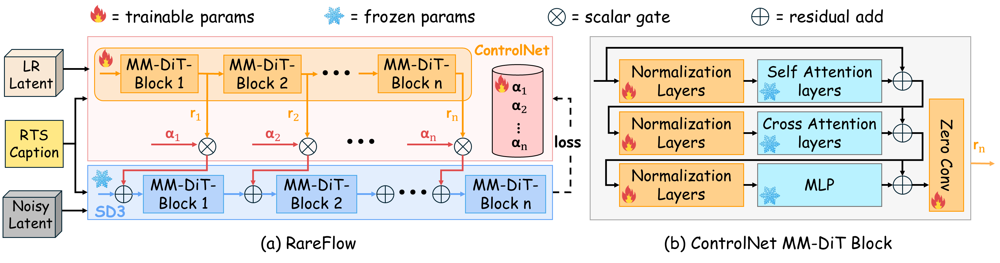

Super-resolution (SR) in remote sensing can look plausible yet be physically inaccurate, especially for rare geomorphic features and across sensors. RareFlow introduces a dual-conditioning architecture—a gated ControlNet to preserve fine-grained geometry from the LR input, plus textual prompts for semantic guidance—trained with a physics-aware loss that enforces spectral & radiometric consistency. The framework also estimates uncertainty via MC-dropout, exposing unfamiliar inputs and mitigating hallucination. On a curated multi-sensor benchmark highlighting retrogressive thaw slumps (RTS), RareFlow attains strong perceptual gains (e.g., a ~38% lower FID than the next best) while maintaining fidelity, and experts often judged outputs on par with HR ground truth.
Sentinel-2 → Maxar (10 m → 2 m)
Physics-aware loss
Uncertainty-gated ControlNet
When the LR input is blurry or semantically OOD, spatial-only guidance preserves
coarse morphology yet remains soft, while semantic-only guidance hallucinates
plausible—but incorrect—textures. RareFlow balances structural evidence
from the LR image with textual semantics, suppressing hallucinations and preserving
physically consistent geometry and spectra.
Key Contributions
Dynamic control of priors: Gated ControlNet + text prompts, balancing geometry vs. semantics to reduce hallucinations under OOD shift.
Physics-aware objective: spectral magnitude alignment + blurred-CIELAB color consistency + LPIPS to preserve radiometry and discourage spurious detail.
Unified SR + harmonization: performs super-resolution and cross-sensor radiometric style transfer jointly.
SOTA under low data: ~800 labeled RTS images; improved perceptual metrics and expert validation.
Method Overview
Dual-Conditioned Flow-Matching in Latent Space. A frozen VAE + diffusion transformer (SD3 MM-DiT) is steered by a trainable ControlNet that consumes LR latents and emits residual hints per block. Per-block scalar gates αl(t, u) depend on diffusion time and uncertainty u (from MC-dropout), scaling control strength during sampling.
Physics-Aware Loss. Base flow-matching loss + (i) FFT magnitude alignment (mid/high frequencies), (ii) blurred-CIELAB mean/std alignment for radiometry, and (iii) LPIPS for perceptual agreement.

Figure 2 (p.4): Control path produces residual hints and per-block gates injected into a frozen backbone.
SSIM (↑) — best on paired LR–HR (Table 1, p.7).
0.83
FSIM (↑) — best (Table 1, p.7).
↓ LPIPS/DISTS
Both lowest on paired setting (Table 1, p.7).
Figure 4 (p.7): Cross-sensor SR + style transfer—RareFlow reconstructs geological detail and matches Maxar style; baselines retain Sentinel-2 style.
Dataset & Challenges
These challenges include:
(1) Spatiotemporal misalignment between LR and HR images, acquired at different times, causes sub-pixel shifts, dramatic variations in illumination, and stark land cover changes. Furthermore, the dataset is characterized by (2) Small image dimensions, with inputs as small as 30×40 pixels, which prevent direct comparison to models evaluated on larger benchmark images. (3) A non-standard 12-bit data range that departs from the typical 8-bit format and makes model performance highly sensitive to the chosen normalization method as it materially alters input data distribution. (4) A limited training corpus of ≈ 800 images, which necessitates a data-efficient approach unsuitable for training large models from scratch.
Figure 3 (p.6): Radiometric shifts, spatial offsets, and snow cover differences between acquisitions.
Expert Evaluation
Geomorphology experts confirmed clear improvements over LR inputs; in many cases, super-resolved outputs were judged perceptually on par with 2 m Maxar ground truth for RTS features.
FAQ
What keeps RareFlow from hallucinating?
Uncertainty-gated control reduces prior “creativity†when evidence is weak; physics-aware losses constrain spectra & color.
Does it handle style differences between sensors?
Yes—SR is coupled with explicit cross-sensor style transfer toward the target instrument’s radiometry and textures.
How should I write text prompts?
Keep prompts descriptive, not prescriptive. Mention scene type, materials, and season (e.g., “periglacial terrain, exposed soil, early summer, minimal snow”). Avoid forcing tiny features (“sharp cracks everywhere”) which can induce artifacts. If the model seems too “creative”, shorten the prompt or lower guidance strength.
What controls the balance between geometry and synthesis?
Two knobs: (1) control strength / gating schedule—higher gates anchor structure to the LR evidence; (2) text guidance scale—higher guidance adds semantics and style. For safety-first reconstructions, increase gates and reduce guidance.
What are the common failure modes?
OOD textures (e.g., heavy snow, cloud, unusual materials), large temporal changes, and overly prescriptive prompts can cause oversharpening or incorrect semantics. Inspect uncertainty maps; if they spike, fall back to stronger control and lighter guidance.
Can I adapt this beyond satellite imagery?
Yes—in principle to other cross-sensor SR tasks. For regulated domains (medical, surveillance), ensure domain approval, anonymization, and strict validation before deployment.
Any ethical or licensing considerations?
Respect the licensing of commercial HR imagery and avoid using SR outputs to make unverifiable claims about fine-scale features. Clearly label synthesized content and provide LR inputs alongside results for context.
Cite
@inproceedings{RareFlow2026,
title = {RareFlow: Physics-Aware Flow-Matching for Cross-Sensor Super-Resolution of Rare-Earth Features},
author = {Fallah, Forouzan and Li, Wenwen and Hsu, Chia-Yu and Lee, Hyunho and Yang, Yezhou},
booktitle = {Under Review},
year = {2026},
note = {Project page: rareflow.github.io}
}